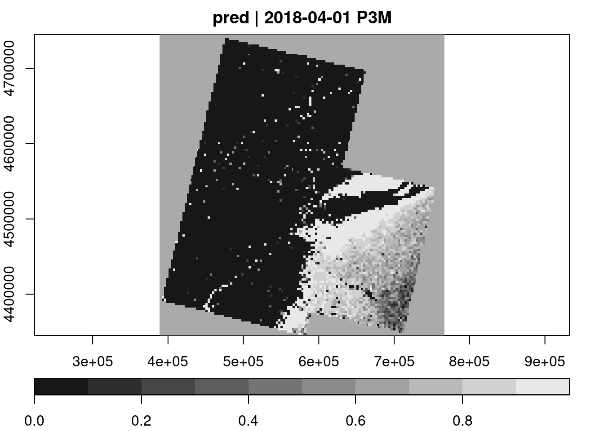

# create image collection from example Landsat data only
# if not already done in other examples
if (!file.exists(file.path(tempdir(), "L8.db"))) {
L8_files <- list.files(system.file("L8NY18", package = "gdalcubes"),
".TIF", recursive = TRUE, full.names = TRUE)
create_image_collection(L8_files, "L8_L1TP", file.path(tempdir(), "L8.db"), quiet = TRUE)
}
v = cube_view(extent=list(left=388941.2, right=766552.4,
bottom=4345299, top=4744931, t0="2018-04", t1="2018-06"),
srs="EPSG:32618", nx = 497, ny=526, dt="P3M")
L8.col = image_collection(file.path(tempdir(), "L8.db"))
x = sf::st_read(system.file("ny_samples.gpkg", package = "gdalcubes"))Reading layer `ny_samples' from data source
`/home/marius/R/x86_64-pc-linux-gnu-library/4.3/gdalcubes/ny_samples.gpkg'
using driver `GPKG'
Simple feature collection with 39 features and 1 field
Geometry type: POINT
Dimension: XY
Bounding box: xmin: 446109.4 ymin: 4376976 xmax: 743200.9 ymax: 4675647
Projected CRS: WGS 84 / UTM zone 18Nraster_cube(L8.col, v) |>
select_bands(c("B02","B03","B04","B05")) |>
extract_geom(x) -> train
x$FID = rownames(x)
train = merge(train, x, by = "FID")
train$iswater = as.factor(train$class == "water")
log_model <- glm(iswater ~ B02 + B03 + B04 + B05, data = train, family = "binomial")Warning: glm.fit: fitted probabilities numerically 0 or 1 occurredraster_cube(L8.col, v) |>
select_bands(c("B02","B03","B04","B05")) |>
predict(model=log_model, type="response") |>
plot(key.pos=1)